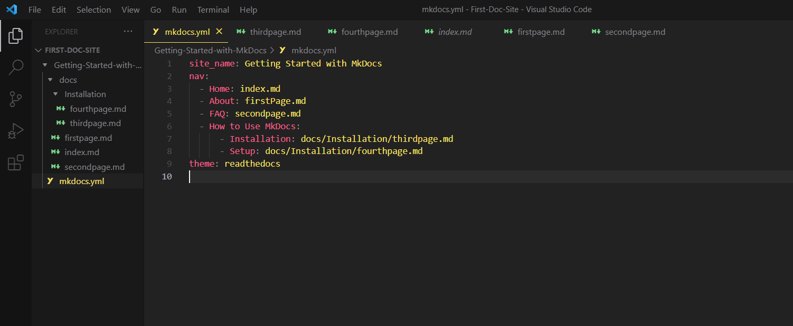

How to use MkDocs themes
MkDocs offers a range of themes for customizing your site. With these themes, you can change the look and styling of your site. They are
-
Built-in themes include the default MkDocs, which does not require installation, and Read the Docs. Follow the steps to use the Read the Docs theme:
- Open the
mkdocs.ymlfile, type intheme, and set the value toreadthedocs.theme: readthedocs - Save the changes in the
mkdocs.ymlfile. 
- Open the
-
External themes offer additional customization options and styles. Follow these steps to get started:
- Find an external theme on GitHub and install it according to the instructions in the documentation.
- In your
mkdocs.ymlfile, type intheme:[themeName] - Explore the customization options of your preferred theme.